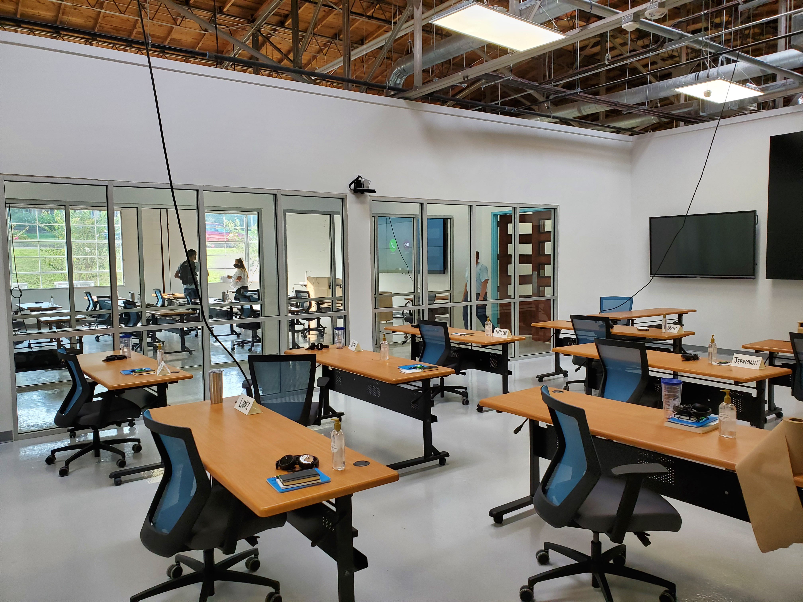
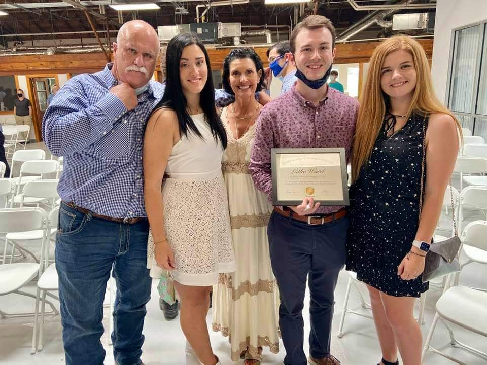

My name is Lathe and I'm accused of being a software developer. I
graduated from a coding bootcamp in 2021 called Base Camp Coding
Academy and it's been quite the journey ever since. I've had the
pleasure of working across the spectrum of projects from COBOL to
React, and this is a short portfolio I put together to summarize my career
up to today.
What is Base Camp Coding Academy?
Per their website:
Base Camp Coding Academy (BCCA) is a non-profit 501(c)(3) organization
with the intention to create a pipeline for under-advantaged individuals
in Mississippi to access careers in software development by offering an
immersive, hands-on, and fast-paced program designed to transform
passionate individuals into job-ready software engineers.
Base Camp is not only consistent of the career technical path of the
Coding Technology degree from Northwest Mississippi Community College,
but has a myriad of sponsors such as Renasant Bank, Core Logic (now
Cotality), and CSpire. You can see their whole list of sponsors
here
Below are the highlights with links to some of the stuff I've worked on.
I'm working on making them publicly usable so some may just be a link to
Github.
Initially I started my journey with Python, and
my first unit project
was with a developer named Matthew who was a much more experienced
programmer. This taught me a lot how being surrounded by talent can
bring out the talent in others.
However, the next project was with someone much more my speed.
Although it was humbling, I learned more and more of the fundamentals
of Python and programming.
May 2020
CourseTrack, a mock education platform
During the spring of 2020, I was able to test my newly aquired Django
skills to make
a small project for my internship at Renasant Bank called
CourseTrack.
This would be my first time being involved in a teams meeting,
creating a platform from top to bottom, and seeing how a team within
an organization works.

Summer 2021
Three Rivers Planning and Development District
During my time at BCCA, I grew an interest in legacy systems because I
noticed that there wasn't a huge focus in the industry for this
codebase that runs some of the most critical systems in the US. After
graduating from Base Camp, the investment of learning COBOL + the
AS400 paid off, and for 2 years I would work on a lean team resolving
session issues, writing new account ledger programs in RPG IV, and
making solid waste management programs in COBOL for North
Mississippi's largest development district, Three Rivers.

2023 - Present
Circadence
I eventually decided I wanted to go back to web development and build
on to the skills I gained in school. To my suprise, a very cool cyber
security company needed a Full Stack dev. My current employer,
Circadence, has taught me so much about Typescript, React, Python, and
best practices within the web development space and the cyber security
space.